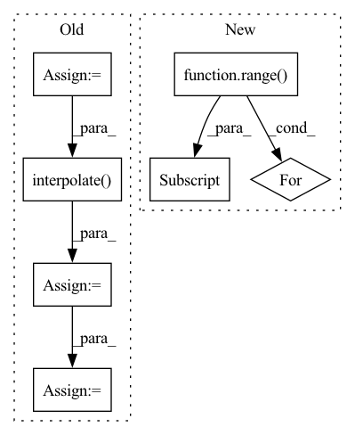

Pattern ID :18399

Before Change
// print("grads: {}".format(grads))
// print("weights: {}".format(type(weights)))
gcam = torch.mul(fmaps, weights).sum(dim=1, keepdim=True)
gcam = F.relu(gcam)
gcam = F.interpolate(
gcam, self.image_shape, mode="bilinear", align_corners=False
)
B, C, H, W = gcam.shape
gcam = gcam.view(B, -1)
gcam -= gcam.min(dim=1, keepdim=True)[0]
gcam /= gcam.max(dim=1, keepdim=True)[0]
After Change
if target_layer == "auto":
fmaps, weights = self.select_highest_layer()
gcam = []
for i in range(self.logits.shape[0]):
gcam.append(self.generate_helper(fmaps[i].unsqueeze(0), weights[i].unsqueeze(0)))
else:
fmaps = self._find(self.fmap_pool, target_layer)
grads = self._find(self.grad_pool, target_layer)
In pattern: SUPERPATTERN
Frequency: 3
Non-data size: 7
Instances
Fragment ID: 60161428
Project Name: karol-g/gcam
Commit Name: 4d3673129f7f35d0b6ea05944a037268b4da45b2
Time: 2020-01-02
Author: KarolGotkowski@gmx.de
File Name: evaluation_models/grad_cam/grad_cam.py
M Class Name: GradCAM
N Class Name: GradCAM
M Method Name: generate(2)
N Method Name: generate(2)
M Parent Class: _BaseWrapper
N Parent Class: _BaseWrapper
M File Name: evaluation_models/grad_cam/grad_cam.py
N File Name: evaluation_models/grad_cam/grad_cam.py
M Start Line: 209
M End Line: 228
N Start Line: 231
N End Line: 244
'>
Before Change
elif config["mask_type"] == "mosaic":
// TODO: Matching the mosaic patch size and the mask size
mosaic_unit_size = config["mosaic_unit_size"]
downsampled_image = F.interpolate(x, scale_factor=1. / mosaic_unit_size, mode="nearest")
upsampled_image = F.interpolate(downsampled_image, size=(height, width), mode="nearest")
result = upsampled_image * mask + x * (1. - mask)
else:
raise NotImplementedError("Not implemented mask type.")
After Change
max_mask = x.shape[0]
result = torch.ones_like(x)
mask = torch.ones(size=[x.shape[0], 1, x.shape[2], x.shape[3]])
for i in range(max_mask):
mask_temp = random_mask(height=height, width=width)
mask_temp = torch.tensor(mask_temp, dtype=torch.float32)
if x.is_cuda:
mask_temp.cuda()
result[i, :, :, :] = x[i, :, :, :] * (1. - mask_temp)
mask[i, :, :, :] = mask[i, :, :, :] * mask_temp
return result, mask
'>
Fragment ID: 60161414
Project Name: sayednadim/global-and-local-attention-based-free-form-image-inpainting
Commit Name: 76ff7604018fa398ac445982097becbe3fc20e3a
Time: 2020-08-16
Author: smnadimuddin@gmail.com
File Name: model/mask.py
M Class Name: AnonimousClass
N Class Name: AnonimousClass
M Method Name: mask_image(2)
N Method Name: mask_image(2)
M Parent Class:
N Parent Class:
M File Name: model/mask.py
N File Name: model/mask.py
M Start Line: 56
M End Line: 72
N Start Line: 49
N End Line: 59
'>
Before Change
inters.append(conv(out)) // P6td = conv(P6in + resize(P7td))
// bottom-up
inters = inters[::-1] // feature maps from bottom to top, same order as input x
outputs = [inters[0]]
for i, conv in enumerate(self.output_convs):
out = F.interpolate(outputs[-1], scale_factor=0.5, mode="nearest") // resize(P3td)
if i < len(self.output_convs) - 1:
out = self.fuse([x[i+1], inters[i+1], out]) // P4in + P4td + resize(P3td)
else:
out = self.fuse([inters[i+1], out]) // P7in + resize(P6td)
outputs.append(conv(out)) // P4out = conv(P4in + P4td + resize(P3td))
return outputs
After Change
// top-down
tds = [None] * self.num_levels
tds[-1] = x[-1]
for i in range(self.num_levels - 2, -1 , -1):
tds[i] = self.td_fuses[i]([x[i], self.upsample(tds[i+1])]) // P6td = conv(P6in + resize(P7td))
// bottom-up
outs = [None] * self.num_levels
'>
Fragment ID: 60161401
Project Name: gau-nernst/vision-toolbox
Commit Name: 0844b6bcb142e63b09cf6ae44e5087c20d52c380
Time: 2022-04-10
Author: gau.nernst@yahoo.com.sg
File Name: vision_toolbox/necks.py
M Class Name: BiFPNLayer
N Class Name: BiFPNLayer
M Method Name: forward(2)
N Method Name: forward(2)
M Parent Class: nn.Module
N Parent Class: nn.Module
M File Name: vision_toolbox/necks.py
N File Name: vision_toolbox/necks.py
M Start Line: 163
M End Line: 180
N Start Line: 160
N End Line: 172